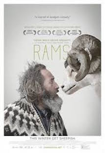
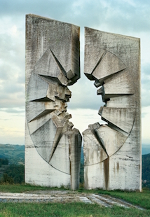

I work for an e-commerce that sells organic and local products. I want to know how to code for my job but also for the many ideas I have in my head and that I want to build !
|  |
RamsIn a remote Icelandic farming valley, two brothers who haven't spoken in 40 years have to come together in order to save what's dearest to them - their sheep. |
|  |
Jan KempenaersThese images by Belgian photographer Jan Kempenaers document a series of ruined World War Two monuments dotted across the landscape of the former Yugoslavian territories.. |